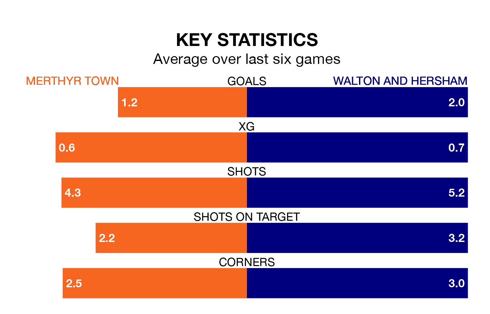

Saturday's match between Merthyr Town and Walton and Hersham promises to be one for the neutrals, as two of the Southern League Premier South's most free-scoring sides go head-to-head.
Ahead of the game, Merthyr and Walton & Hersham sit second and third in the goal-scoring charts, with 67 and 65 goals respectively.
Merthyr are in terrible form in the Southern League Premier South, with no wins and two draws from their last six games.
With three wins and a draw over that period, Walton & Hersham's form is much better – they have taken 10 points from 18, compared to Town's two.
The home team are fifth in the table after 33 games, of which they have won 16 and drawn five, earning 53 points.
The visitors are one place behind Merthyr in sixth, with 15 wins and seven draws putting them on 52 points.
In the last three years, Merthyr and Walton & Hersham have played each other on three occasions. Merthyr won two of them and Walton & Hersham one.
Their last meeting was on November 25, when Merthyr won 3-2 away.
Merthyr's last match was on March 16, a 0-0 draw against Salisbury.
Walton & Hersham beat Didcot Town 4-2 last time out, also on March 16.
Updated: 10:19 (UTC), 22/03/24